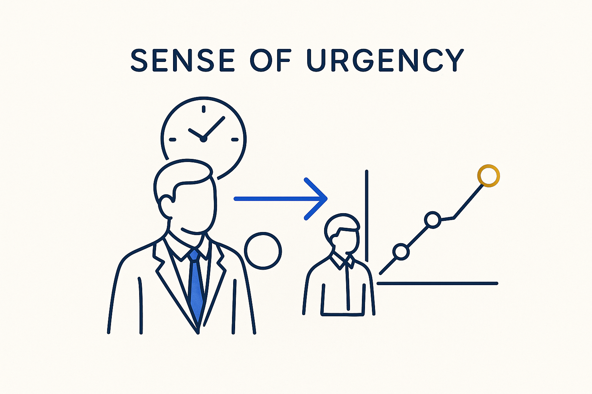

With today's technology, waiting is a choice — act now, don't accept delays, and don't fall behind the smaller, smarter organizations that already made the shift.

> With today's technology, waiting is a choice — act now, don't accept delays, and don't fall behind the smaller, smarter organizations that already made the shift.
Sense of urgency is what turns a good idea into a moved needle. The field is stuck, AI is changing the rules right now, and the tools to work differently already exist — so waiting is no longer caution, it is a decision with a cost. Every quarter spent paying for outdated tools, or burning tokens on unstructured chat, is a quarter handed to someone faster.
And the fast movers are often the smaller, smarter organizations — the ones without the license contracts and the committee to protect them, free to build on their own requirements and ship. Urgency is the honest recognition that the gap compounds: the longer you wait, the further ahead they get, and the harder it becomes to catch up.
The attitude that follows: don’t accept delays, stick to agreements, no excuses. Not panic — directed forward energy. Momentum. Ask “why wait?” and let the answer move you.
Where it lives: the attitude layer of Breakthrough Modeling — the reason it’s *now*.